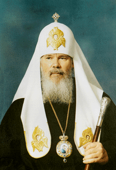

 Дорогие воины — верные защитники Отечества! Сердечно поздравляю вас со вступлением человечества в третье тысячелетие от Рождества Христова. Знаменательно, что событие, происшедшее XX веков назад в Вифлееме, положило начало новому летосчислению, новой христианской эре. Вот уже более тысячи лет прошло с тех пор, как Русь приняла христианство и тем самым приобщилась к великому духовному наследию, включающему в себя вместе с Евангельскими заповедями Христа Спасителя и особое отношение Церкви к воинам и их ратному подвигу. Защитники родной земли всегда были готовы, по слову Иисуса Христа, «положить жизнь свою за други своя» (Ин. 15, 13). И не случайно на протяжении всей истории Государства Российского тесный союз между служителями Церкви и Отечества был видимым знаком духовной и нравственной силы России, символом доблести и чести воинства. Церковь всегда благословляла нелегкое воинское служение, молилась о даровании побед, в скорбные дни разделяла с народом боль утраты по погибшим на поле брани. Среди святых, почитаемых Церковью, немало воинов: святой великомученик и Победоносец Георгий, благоверные князья Дмитрий Донской и Александр Невский, креститель Руси святой равноапостольный князь Владимир и сыновья его — страстотерпцы Борис и Глеб, князья Михаил и Всеволод Черниговские... Этот далеко не полный перечень святых воинов – яркий пример самоотверженного служения защитников Отечества и благодарной памяти потомков об их ратных подвигах. Дорогие воины! Сегодня, на рубеже тысячелетий, Церковь и Армия, как и прежде, вновь объединены в служении народу. Вооруженные Силы России — незыблемая основа государственной обороноспособности. Будьте же достойны высокого звания российского воина, храните и преумножайте славу ваших предков. Помните, что Русская Православная Церковь — с вами, вашими семьями, родными и близкими. Она молится и будет молиться о воинстве, надеясь на помощь Божию в вашем нелегком служении, веря в вашу духовную стойкость и умение преодолевать все трудности и испытания, вам мужества, крепости душевных и телесных сил и успехов в благородном служении Великой России. Да хранит вас Бог на всех путях жизни и служения вашего! |